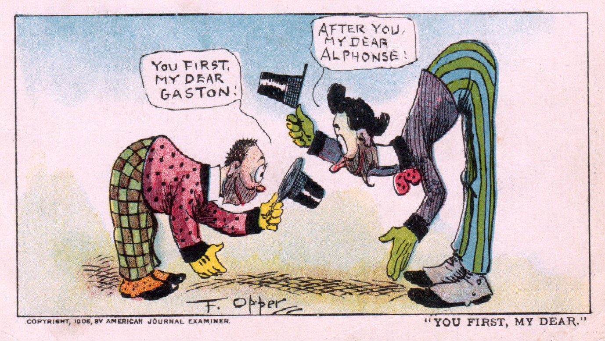
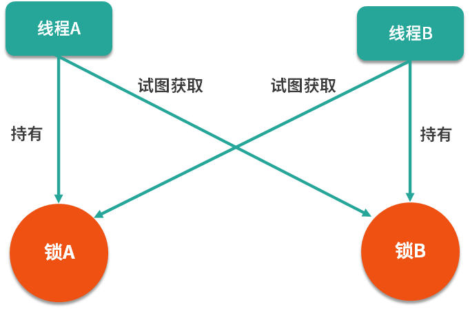
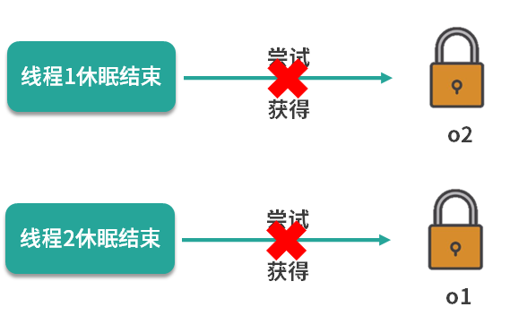

- 00 由点及面，搭建你的 Java 并发知识网.md.html
- 01 为何说只有 1 种实现线程的方法？.md.html
- 02 如何正确停止线程？为什么 volatile 标记位的停止方法是错误的？.md.html
- 03 线程是如何在 6 种状态之间转换的？.md.html
- 04 waitnotifynotifyAll 方法的使用注意事项？.md.html
- 05 有哪几种实现生产者消费者模式的方法？.md.html
- 06 一共有哪 3 类线程安全问题？.md.html
- 07 哪些场景需要额外注意线程安全问题？.md.html
- 08 为什么多线程会带来性能问题？.md.html
- 09 使用线程池比手动创建线程好在哪里？.md.html
- 10 线程池的各个参数的含义？.md.html
- 11 线程池有哪 4 种拒绝策略？.md.html
- 12 有哪 6 种常见的线程池？什么是 Java8 的 ForkJoinPool？.md.html
- 13 线程池常用的阻塞队列有哪些？.md.html
- 14 为什么不应该自动创建线程池？.md.html
- 15 合适的线程数量是多少？CPU 核心数和线程数的关系？.md.html
- 16 如何根据实际需要，定制自己的线程池？.md.html
- 17 如何正确关闭线程池？shutdown 和 shutdownNow 的区别？.md.html
- 18 线程池实现“线程复用”的原理？.md.html
- 19 你知道哪几种锁？分别有什么特点？.md.html
- 20 悲观锁和乐观锁的本质是什么？.md.html
- 21 如何看到 synchronized 背后的“monitor 锁”？.md.html
- 22 synchronized 和 Lock 孰优孰劣，如何选择？.md.html
- 23 Lock 有哪几个常用方法？分别有什么用？.md.html
- 24 讲一讲公平锁和非公平锁，为什么要“非公平”？.md.html
- 25 读写锁 ReadWriteLock 获取锁有哪些规则？.md.html
- 26 读锁应该插队吗？什么是读写锁的升降级？.md.html
- 27 什么是自旋锁？自旋的好处和后果是什么呢？.md.html
- 28 JVM 对锁进行了哪些优化？.md.html
- 29 HashMap 为什么是线程不安全的？.md.html
- 30 ConcurrentHashMap 在 Java7 和 8 有何不同？.md.html
- 31 为什么 Map 桶中超过 8 个才转为红黑树？.md.html
- 32 同样是线程安全，ConcurrentHashMap 和 Hashtable 的区别.md.html
- 33 CopyOnWriteArrayList 有什么特点？.md.html
- 34 什么是阻塞队列？.md.html
- 35 阻塞队列包含哪些常用的方法？add、offer、put 等方法的区别？.md.html
- 36 有哪几种常见的阻塞队列？.md.html
- 37 阻塞和非阻塞队列的并发安全原理是什么？.md.html
- 38 如何选择适合自己的阻塞队列？.md.html
- 39 原子类是如何利用 CAS 保证线程安全的？.md.html
- 40 AtomicInteger 在高并发下性能不好，如何解决？为什么？.md.html
- 41 原子类和 volatile 有什么异同？.md.html
- 42 AtomicInteger 和 synchronized 的异同点？.md.html
- 43 Java 8 中 Adder 和 Accumulator 有什么区别？.md.html
- 44 ThreadLocal 适合用在哪些实际生产的场景中？.md.html
- 45 ThreadLocal 是用来解决共享资源的多线程访问的问题吗？.md.html
- 46 多个 ThreadLocal 在 Thread 中的 threadlocals 里是怎么存储的？.md.html
- 47 内存泄漏——为何每次用完 ThreadLocal 都要调用 remove()？.md.html
- 48 Callable 和 Runnable 的不同？.md.html
- 49 Future 的主要功能是什么？.md.html
- 50 使用 Future 有哪些注意点？Future 产生新的线程了吗？.md.html
- 51 如何利用 CompletableFuture 实现“旅游平台”问题？.md.html
- 52 信号量能被 FixedThreadPool 替代吗？.md.html
- 53 CountDownLatch 是如何安排线程执行顺序的？.md.html
- 54 CyclicBarrier 和 CountdownLatch 有什么异同？.md.html
- 55 Condition、object.wait() 和 notify() 的关系？.md.html
- 56 讲一讲什么是 Java 内存模型？.md.html
- 57 什么是指令重排序？为什么要重排序？.md.html
- 58 Java 中的原子操作有哪些注意事项？.md.html
- 59 什么是“内存可见性”问题？.md.html
- 60 主内存和工作内存的关系？.md.html
- 61 什么是 happens-before 规则？.md.html
- 62 volatile 的作用是什么？与 synchronized 有什么异同？.md.html
- 63 单例模式的双重检查锁模式为什么必须加 volatile？.md.html
- 64 你知道什么是 CAS 吗？.md.html
- 65 CAS 和乐观锁的关系，什么时候会用到 CAS？.md.html
- 66 CAS 有什么缺点？.md.html
- 67 如何写一个必然死锁的例子？.md.html
- 68 发生死锁必须满足哪 4 个条件？.md.html
- 69 如何用命令行和代码定位死锁？.md.html
- 70 有哪些解决死锁问题的策略？.md.html
- 71 讲一讲经典的哲学家就餐问题.md.html
- 72 final 的三种用法是什么？.md.html
- 73 为什么加了 final 却依然无法拥有“不变性”？.md.html
- 74 为什么 String 被设计为是不可变的？.md.html
- 75 为什么需要 AQS？AQS 的作用和重要性是什么？.md.html
- 76 AQS 的内部原理是什么样的？.md.html
- 77 AQS 在 CountDownLatch 等类中的应用原理是什么？.md.html
- 78 一份独家的 Java 并发工具图谱.md.html
- 捐赠
67 如何写一个必然死锁的例子？
本课时我们会首先介绍什么是死锁，死锁有什么危害和特点，然后通过代码分析一个“必然死锁的例子”。
死锁是什么？有什么危害?
什么是死锁
发生在并发中
首先你要知道，死锁一定发生在并发场景中。我们为了保证线程安全，有时会给程序使用各种能保证并发安全的工具，尤其是锁，但是如果在使用过程中处理不得当，就有可能会导致发生死锁的情况。
互不相让
死锁是一种状态，当两个（或多个）线程（或进程）相互持有对方所需要的资源，却又都不主动释放自己手中所持有的资源，导致大家都获取不到自己想要的资源，所有相关的线程（或进程）都无法继续往下执行，在未改变这种状态之前都不能向前推进，我们就把这种状态称为死锁状态，认为它们发生了死锁。通俗的讲，死锁就是两个或多个线程（或进程）被无限期地阻塞，相互等待对方手中资源的一种状态。
生活中的例子
下面我们用图示的方法来展示一种生活中发生死锁的情况，如下图所示：

可以看到这张漫画展示了两个绅士分别向对方鞠躬的场景，为了表示礼貌，他们弯下腰之后谁也不愿意先起身，都希望对方起身之后我再起身。可是这样一来，就没有任何人可以先起身，起身这个动作就一直无法继续执行，两人形成了相互等待的状态，所以这就是一种典型的死锁！
两个线程的例子
下面我们用动画的形式来看一下两个线程发生死锁的情况，如下图所示：

此时我们有两个线程，分别是线程 A 和线程 B，假设线程 A 现在持有了锁 A，线程 B 持有了锁 B，然后线程 A 尝试去获取锁 B，当然它获取不到，因为线程 B 还没有释放锁 B。然后线程 B 又来尝试获取锁 A，同样线程 B 也获取不到锁 A，因为锁 A 已经被线程 A 持有了。这样一来，线程 A 和线程 B 就发生了死锁，因为它们都相互持有对方想要的资源，却又不释放自己手中的资源，形成相互等待，而且会一直等待下去。
多个线程造成死锁的情况
死锁不仅仅存在于两个线程的场景，在多个线程中也同样存在。如果多个线程之间的依赖关系是环形，存在环路的依赖关系，那么也可能会发生死锁，如下图所示：

我们看到在这个例子中，首先线程 1 持有了锁 A，然后线程 2 持有了锁 B，然后线程 3 持有了锁 C，现在每个线程都分别持有一把锁。接下来线程 1 想要去持有锁 B，可是它获取不到，因为现在锁 B 正在线程 2 的手里；接下来线程 2 又去尝试获取锁 C， 它同样也获取不到，因为现在锁 C 在线程 3 的手里；然后线程 3 去尝试获取锁 A ，当然它也获取不到，因为锁 A 现在在线程 1 的手里，这样一来线程 1、线程 2 和线程 3 相互之间就形成了一个环，这就是在多线程中发生死锁的情况。所以不仅是两个线程，多个线程同样也有可能会发生死锁的情况。
死锁的影响
死锁的影响在不同系统中是不一样的，影响的大小一部分取决于当前这个系统或者环境对死锁的处理能力。
数据库中
例如，在数据库系统软件的设计中，考虑了监测死锁以及从死锁中恢复的情况。在执行一个事务的时候可能需要获取多把锁，并一直持有这些锁直到事务完成。在某个事务中持有的锁可能在其他事务中也需要，因此在两个事务之间有可能发生死锁的情况，一旦发生了死锁，如果没有外部干涉，那么两个事务就会永远的等待下去。但数据库系统不会放任这种情况发生，当数据库检测到这一组事务发生了死锁时，根据策略的不同，可能会选择放弃某一个事务，被放弃的事务就会释放掉它所持有的锁，从而使其他的事务继续顺利进行。此时程序可以重新执行被强行终止的事务，而这个事务现在就可以顺利执行了，因为所有跟它竞争资源的事务都已经在刚才执行完毕，并且释放资源了。
JVM 中
在 JVM 中，对于死锁的处理能力就不如数据库那么强大了。如果在 JVM 中发生了死锁，JVM 并不会自动进行处理，所以一旦死锁发生，就会陷入无穷的等待。
几率不高但危害大
死锁的问题和其他的并发安全问题一样，是概率性的，也就是说，即使存在发生死锁的可能性，也并不是 100% 会发生的。如果每个锁的持有时间很短，那么发生冲突的概率就很低，所以死锁发生的概率也很低。但是在线上系统里，可能每天有几千万次的“获取锁”、“释放锁”操作，在巨量的次数面前，整个系统发生问题的几率就会被放大，只要有某几次操作是有风险的，就可能会导致死锁的发生。
也正是因为死锁“不一定会发生”的特点，导致提前找出死锁成为了一个难题。压力测试虽然可以检测出一部分可能发生死锁的情况，但是并不足以完全模拟真实、长期运行的场景，因此没有办法把所有潜在可能发生死锁的代码都找出来。
一旦发生了死锁，根据发生死锁的线程的职责不同，就可能会造成子系统崩溃、性能降低甚至整个系统崩溃等各种不良后果。而且死锁往往发生在高并发、高负载的情况下，因为可能会直接影响到很多用户，造成一系列的问题。以上就是死锁发生几率不高但是危害大的特点。
发生死锁的例子
下面我们举一个必然会发生死锁的例子，代码如下所示：
/**
* 描述： 必定死锁的情况
*/
public class MustDeadLock implements Runnable {
public int flag;
static Object o1 = new Object();
static Object o2 = new Object();
public void run() {
System.out.println("线程"+Thread.currentThread().getName() + "的flag为" + flag);
if (flag == 1) {
synchronized (o1) {
try {
Thread.sleep(500);
} catch (Exception e) {
e.printStackTrace();
}
synchronized (o2) {
System.out.println("线程1获得了两把锁");
}
}
}
if (flag == 2) {
synchronized (o2) {
try {
Thread.sleep(500);
} catch (Exception e) {
e.printStackTrace();
}
synchronized (o1) {
System.out.println("线程2获得了两把锁");
}
}
}
}
public static void main(String[] argv) {
MustDeadLock r1 = new MustDeadLock();
MustDeadLock r2 = new MustDeadLock();
r1.flag = 1;
r2.flag = 2;
Thread t1 = new Thread(r1, "t1");
Thread t2 = new Thread(r2, "t2");
t1.start();
t2.start();
}
}
可以看到，在这段代码中有一个 int 类型的 flag，它是一个标记位，然后我们新建了 o1 和 o2、作为 synchronized 的锁对象。
下面我们来看看 run 方法。在 run 方法里面，它会首先打印出当前线程的名字，然后打印出当前线程 flag 的值是多少。
如果 flag 等于 1，就会先获取 o1 这把锁，然后休眠 500 毫秒，再去尝试获取 o2 这把锁并且打印出”线程1获得了两把锁”。
如果 flag 等于 2，那么情况恰恰相反，线程会先获取 o2 这把锁，然后休眠 500 毫秒，再去获取 o1 这把锁，并且打印出”线程2获得了两把锁”。
最后我们来看一下 main 方法，在 main 方法中新建了两个本类的实例，也就是两个 Runnable 对象，并且把它们的 flag 分别改为 1 和 2：r1 的 flag 设置为 1，r2 的 flag 设置为 2。然后新建两个线程，分别去执行这两个 Runnable 对象，执行 r1 和 r2 这两个线程的名字分别叫做 t1 和 t2，最后我们把两个线程给启动起来。
程序的一种执行结果：
线程t1的flag为1
线程t2的flag为2
这里的重点就在于程序执行到此时还在继续执行，并没停止，并且它永远不会打印出“线程 1 获得了两把锁”或“线程 2 获得了两把锁”这样的语句，此时这里就发生了死锁。
对发生死锁这个过程进行分析
下面我们对上面发生死锁的过程进行分析：
- 当第 1 个线程运行的时候，它会发现自己的 flag 是 1 ，所以它会尝试先获得 o1 这把锁，然后休眠 500 毫秒。

- 在线程 1 启动并休眠的期间，线程 2 同样会启动起来。由于线程 2 的 flag 是 2，所以它会进入到下面 的 if (flag == 2) 对应的代码块中，然后线程 2 首先会去获取 o2 这把锁。也就是说在线程 1 启动并获取到 o1 这把锁之后进行休眠的期间，线程 2 获取到了 o2 这把锁，然后线程 2 也开始 500 毫秒的休眠。

- 当线程 1 的 500 毫秒休眠时间结束后，它将尝试去获取 o2 这把锁，此时 o2 这个锁正被线程 2 持有，所以线程 1 无法获取到的 o2。

- 紧接着线程 2 也会苏醒过来，它将尝试获取 o1 这把锁，此时 o1 已被线程 1 持有。

所以现在的状态是，线程 1 卡在获取 o2 这把锁的位置，而线程 2 卡在获取 o1 这把锁的位置，这样一来线程 1 和线程 2 就形成了相互等待，需要对方持有的资源才能继续执行，从而形成了死锁。在这个例子里，如果线程 2 比线程 1 先启动，情况也是类似的，最终也会形成死锁。这就是一个“必然发生死锁的例子”。

总结
在本课时中，我们首先介绍了什么是死锁，接着介绍了死锁在生活中、两个线程中以及多个线程中的例子。然后我们分析了死锁的影响，在 JVM 中如果发生死锁，可能会导致程序部分甚至全部无法继续向下执行的情况，所以死锁在 JVM 中所带来的危害和影响是比较大的，我们需要尽量避免。最后举了一个必然会发生死锁的例子代码，并且对此代码进行了详细的分析。
© 2019 - 2023 Liangliang Lee. Powered by gin and hexo-theme-book.